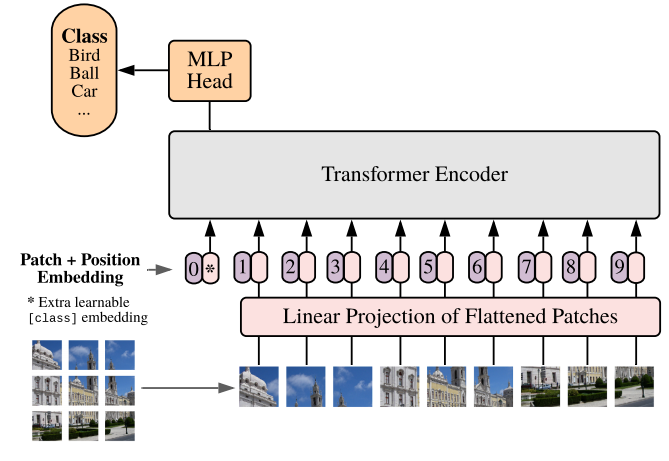

2024-05-23 · vision transformer, computer vision, architecture
Bài viết này sẽ giải thích kiến trúc Vision Transformer từ lý thuyết đến code from scratch, giúp bạn hiểu tại sao ViT lại là một bước ngoặt lớn trong Computer Vision.
Sau khi Transformer ra mắt vào năm 2017 (trong paper "Attention Is All You Need"), nó đã tạo ra một cuộc cách mạng trong NLP — thay thế hoàn toàn các kiến trúc RNN/LSTM vốn chậm và khó song song hóa.
Tuy nhiên, câu hỏi đặt ra là: Transformer có thể dùng cho ảnh không?
Vấn đề cốt lõi là Transformer được thiết kế để xử lý chuỗi (sequence) — một dãy các token rời rạc. Trong khi đó, ảnh là một lưới 2D pixel liên tục, hoàn toàn khác về bản chất. Để dùng Transformer thẳng cho ảnh, bạn sẽ phải flatten toàn bộ pixel — với ảnh 224×224, đó là 50,176 token cho mỗi tấm hình, bộ nhớ sẽ bùng nổ ngay lập tức.
Alexey Dosovitskiy et al. đã giải quyết vấn đề này trong paper nổi tiếng:
"An Image is Worth 16x16 Words: Transformers for Image Recognition at Scale" (2020)
Ý tưởng cốt lõi rất đơn giản: Chia tấm ảnh thành các mảnh nhỏ (patches), mỗi patch tương đương một "từ" trong câu. Bằng cách đó, một ảnh 224×224 với patch size 16×16 chỉ còn (224/16)² = 196 token — giảm hơn 250 lần.
Toàn bộ sự khác biệt giữa ViT và Transformer gốc nằm ở bước tiền xử lý input này:
Ảnh gốc: (H, W, C)
↓ chia thành các patch
Patch: (N, P×P×C)
Trong đó:
H, W — chiều cao và chiều rộng của ảnhC — số channel (thường là 3 cho RGB)P — patch size (thường là 16)N = (H/P) × (W/P) — số lượng patches (số "từ" trong câu)Ví dụ với ảnh ImageNet chuẩn (224×224×3) và patch size 16:
(224/16) × (224/16) = 14 × 14 = 196 patches16 × 16 × 3 = 768 chiềuSau khi có các patches, ViT thêm hai thứ quan trọng:
Class Token [CLS]: Một token đặc biệt được thêm vào đầu chuỗi, học cách tổng hợp thông tin từ toàn bộ ảnh. Output của token này sẽ được dùng để phân loại (tương tự [CLS] trong BERT).
Positional Embedding: Transformer không có khái niệm thứ tự, nên ta phải cộng thêm thông tin vị trí vào mỗi patch embedding để mô hình biết patch này nằm ở đâu trong ảnh.

Hình: Kiến trúc Vision Transformer — ảnh được chia thành patches, qua embedding rồi đưa vào Transformer encoderViT gồm 3 phần chính:
Input Image
│
▼
┌─────────────────┐
│ Patch Extractor │ ← Chia ảnh thành N patches
└────────┬────────┘
│
▼
┌─────────────────┐
│ Embedding Layer │ ← Linear projection + Positional Encoding
└────────┬────────┘
│
▼
┌──────────────────────────────┐
│ Transformer Encoder │
│ ┌────────────────────────┐ │
│ │ Multi-Head Attention │ │
│ │ + Layer Norm │ │
│ ├────────────────────────┤ │
│ │ Feed Forward Block │ │
│ │ + Layer Norm │ │
│ └────────────────────────┘ │
│ × L layers │
└────────┬─────────────────────┘
│
▼
┌─────────────────┐
│ MLP Head │ ← Output class probabilities
└─────────────────┘
Sau khi qua Transformer, ta flatten output và đưa qua một lớp linear để dự đoán class. Trong bản gốc của paper, chỉ có class token được dùng cho classification — nhưng trong implement đơn giản hóa dưới đây, ta sẽ flatten toàn bộ output.
import torch
import torch.nn as nn
import numpy as np
Module này nhận vào một batch ảnh và trả về các patches dưới dạng chuỗi:
class PatchExtractor(nn.Module):
def __init__(self, patch_size=16):
super().__init__()
self.patch_size = patch_size
def forward(self, x):
# x shape: (batch_size, channels, height, width)
B, C, H, W = x.size()
assert H % self.patch_size == 0 and W % self.patch_size == 0, \
f"Image size ({H}x{W}) phải chia hết cho patch_size ({self.patch_size})"
num_patches_h = H // self.patch_size
num_patches_w = W // self.patch_size
num_patches = num_patches_h * num_patches_w
# unfold: trích xuất sliding windows theo chiều H và W
patches = (
x.unfold(2, self.patch_size, self.patch_size)
.unfold(3, self.patch_size, self.patch_size)
.permute(0, 2, 3, 1, 4, 5)
.contiguous()
.view(B, num_patches, -1)
)
# Output shape: (batch_size, num_patches, patch_size*patch_size*channels)
return patches
Giải thích từng bước:
unfold(2, P, P) — trượt cửa sổ P×P theo chiều Hunfold(3, P, P) — trượt theo chiều Wpermute(0, 2, 3, 1, 4, 5) — sắp xếp lại thành (B, nH, nW, C, P, P)view(B, num_patches, -1) — flatten mỗi patch thành vector 1DChiếu mỗi patch lên không gian latent_size chiều và cộng thêm positional encoding:
class EmbeddingLayer(nn.Module):
def __init__(self, latent_size=1024, num_patches=4, input_dim=768):
super().__init__()
self.num_patches = num_patches
# Chiếu patch thô → latent space
self.input_embedder = nn.Linear(input_dim, latent_size)
# Học positional encoding từ chỉ số vị trí
self.pos_embedder = nn.Linear(1, latent_size)
# Tạo chỉ số vị trí: [0, 1, 2, ..., num_patches-1]
self.register_buffer(
'positional_information',
torch.arange(0, num_patches).reshape(1, num_patches, 1).float()
)
def forward(self, x):
# x shape: (N, num_patches, input_dim)
N = x.shape[0]
input_embedding = self.input_embedder(x)
pos_info = self.positional_information.expand(N, -1, -1)
positional_embedding = self.pos_embedder(pos_info)
# Cộng patch embedding và positional embedding
return input_embedding + positional_embedding
💡 Lưu ý: Ở đây ta dùng
register_bufferthay vìself.positional_informationđểpositional_informationtự động chuyển sang đúng device (CPU/GPU) cùng với model.
class ViT(nn.Module):
def __init__(
self,
patch_size: int = 16,
img_dimension: tuple = (32, 32),
latent_size: int = 1024,
num_heads: int = 2,
num_classes: int = 10,
dropout: float = 0.1,
):
super().__init__()
H, W = img_dimension
assert H % patch_size == 0 and W % patch_size == 0, \
"Kích thước ảnh phải chia hết cho patch_size!"
self.num_patches = (H // patch_size) * (W // patch_size)
input_dim = patch_size * patch_size * 3 # 3 channels RGB
# --- Các thành phần chính ---
self.patchifier = PatchExtractor(patch_size)
self.embedding_layer = EmbeddingLayer(
latent_size=latent_size,
num_patches=self.num_patches,
input_dim=input_dim,
)
# Multi-Head Self-Attention
self.multi_head_attn = nn.MultiheadAttention(
embed_dim=latent_size,
num_heads=num_heads,
dropout=dropout,
batch_first=True, # Input: (batch, seq, feature)
)
self.norm_1 = nn.LayerNorm(latent_size)
self.norm_2 = nn.LayerNorm(latent_size)
self.dropout = nn.Dropout(dropout)
# Feed Forward Block: mở rộng → thu hẹp
self.feed_forward = nn.Sequential(
nn.Linear(latent_size, latent_size * 4),
nn.GELU(),
nn.Dropout(dropout),
nn.Linear(latent_size * 4, latent_size),
)
# Classification head
self.output_layer = nn.Linear(latent_size * self.num_patches, num_classes)
def forward(self, x):
# Bước 1: Tách ảnh thành patches
x = self.patchifier(x) # (B, N, P*P*C)
# Bước 2: Embedding + Positional Encoding
x = self.embedding_layer(x) # (B, N, latent_size)
# Bước 3: Multi-Head Self-Attention với residual connection
attn_out, _ = self.multi_head_attn(x, x, x)
x = self.norm_1(self.dropout(attn_out) + x) # Pre-norm + residual
# Bước 4: Feed Forward với residual connection
x = self.norm_2(self.feed_forward(x) + x) # (B, N, latent_size)
# Bước 5: Flatten và phân loại
x = x.flatten(start_dim=1) # (B, N*latent_size)
x = self.output_layer(x) # (B, num_classes)
return x
Các cải tiến so với phiên bản gốc:
batch_first=True cho MultiheadAttention — input đúng format (B, N, D)GELU thay vì ReLU trong FFN (đúng với paper gốc)register_buffer cho positional info để tự động chuyển deviceimport torchvision
import torchvision.transforms as transforms
from torch import optim
from tqdm import tqdm
# --- Data ---
transform = transforms.Compose([
transforms.ToTensor(),
transforms.Normalize((0.5, 0.5, 0.5), (0.5, 0.5, 0.5)),
])
BATCH_SIZE = 64
trainset = torchvision.datasets.CIFAR10(root='./data', train=True, download=True, transform=transform)
testset = torchvision.datasets.CIFAR10(root='./data', train=False, download=True, transform=transform)
trainloader = torch.utils.data.DataLoader(trainset, batch_size=BATCH_SIZE, shuffle=True, num_workers=2)
testloader = torch.utils.data.DataLoader(testset, batch_size=BATCH_SIZE, shuffle=False, num_workers=2)
CLASSES = ('plane', 'car', 'bird', 'cat', 'deer', 'dog', 'frog', 'horse', 'ship', 'truck')
# --- Model ---
device = torch.device("cuda" if torch.cuda.is_available() else "cpu")
model = ViT(
patch_size=8, # 32/8 = 4 patches mỗi chiều → 16 patches tổng
img_dimension=(32, 32),
latent_size=512,
num_heads=4,
num_classes=10,
).to(device)
print(f"Số tham số: {sum(p.numel() for p in model.parameters()):,}")
# --- Training ---
optimizer = optim.AdamW(model.parameters(), lr=1e-3, weight_decay=1e-4)
scheduler = optim.lr_scheduler.CosineAnnealingLR(optimizer, T_max=10)
loss_fn = nn.CrossEntropyLoss()
def train_epoch(loader):
model.train()
total_loss, correct, total = 0, 0, 0
for x, y in tqdm(loader, desc="Training"):
x, y = x.to(device), y.to(device)
logits = model(x)
loss = loss_fn(logits, y)
optimizer.zero_grad()
loss.backward()
optimizer.step()
total_loss += loss.item()
correct += (logits.argmax(1) == y).sum().item()
total += len(y)
return total_loss / len(loader), correct / total
@torch.no_grad()
def evaluate(loader):
model.eval()
total_loss, correct, total = 0, 0, 0
for x, y in tqdm(loader, desc="Evaluating"):
x, y = x.to(device), y.to(device)
logits = model(x)
total_loss += loss_fn(logits, y).item()
correct += (logits.argmax(1) == y).sum().item()
total += len(y)
return total_loss / len(loader), correct / total
def train(epochs=20):
for epoch in range(epochs):
train_loss, train_acc = train_epoch(trainloader)
val_loss, val_acc = evaluate(testloader)
scheduler.step()
print(f"Epoch {epoch+1:02d}/{epochs} | "
f"Train Loss: {train_loss:.4f} Acc: {train_acc:.3f} | "
f"Val Loss: {val_loss:.4f} Acc: {val_acc:.3f}")
train(20)
Kết quả tham khảo: Với thiết lập trên, sau ~20 epochs, bạn có thể đạt khoảng 60-65% accuracy trên CIFAR-10. ViT nhỏ không giỏi trên dataset nhỏ — đây là điểm yếu nổi tiếng của kiến trúc này (xem thêm ở phần FAQ).
Chọn patch size phù hợp
Patch size phải là ước số của cả H và W. Patch nhỏ hơn → nhiều token hơn → context phong phú hơn nhưng tốn bộ nhớ hơn. Với ảnh 32×32, dùng patch_size=4 hoặc 8. Với ảnh 224×224, dùng patch_size=16 hoặc 32.
ViT cần nhiều dữ liệu ViT thiếu inductive bias về cấu trúc cục bộ (như CNN), nên cần dataset lớn (ít nhất vài trăm nghìn ảnh) để hội tụ tốt. Với dataset nhỏ như CIFAR-10, hãy dùng pretrained ViT và fine-tune.
Dùng pretrained model khi có thể
# Thay vì train from scratch, dùng torchvision hoặc timm
import timm
model = timm.create_model('vit_base_patch16_224', pretrained=True, num_classes=10)
Learning rate và warmup
Transformer rất nhạy với learning rate. Nên dùng learning rate warmup + cosine decay, và AdamW thay vì Adam.
Regularization
Thêm Dropout (0.1-0.2) và weight_decay trong optimizer để tránh overfitting, đặc biệt khi train từ đầu.
❓ Tại sao ViT kém hơn CNN trên dataset nhỏ?
CNN có sẵn hai "thiên kiến quy nạp" (inductive bias): locality (pixel gần nhau thường liên quan) và translation equivariance (object ở đâu cũng nhận ra). ViT không có những giả định này — nó học chúng từ dữ liệu. Vì vậy ViT cần nhiều dữ liệu hơn để bù lại, nhưng khi có đủ data nó thường vượt trội CNN.
❓ Class token [CLS] là gì và có bắt buộc không?
[CLS] là một vector học được, đặt ở đầu chuỗi. Sau khi qua Transformer, nó sẽ "attend" đến tất cả patches và tổng hợp thông tin toàn ảnh. Trong paper gốc, chỉ output của [CLS] token được dùng để phân loại. Không bắt buộc — một số variant dùng average pooling trên tất cả token thay thế.
❓ Positional Encoding học được hay cố định?
Paper gốc dùng positional encoding học được (learned), không phải sinusoidal cố định. Thú vị là kết quả không khác nhau nhiều giữa hai cách, nhưng learned encoding thường linh hoạt hơn.
❓ ViT có thể xử lý ảnh kích thước khác nhau không?
Không dễ dàng. Vì positional encoding cố định theo số patches, nếu ảnh thay đổi kích thước thì số patches thay đổi và encoding không khớp nữa. Một số giải pháp: interpolate positional encoding, dùng RoPE (Rotary Positional Embedding), hoặc resize ảnh về kích thước cố định trước.
❓ Sự khác biệt giữa ViT-B, ViT-L, ViT-H là gì?
Đây là các biến thể kích thước khác nhau trong paper gốc:
| Model | Layers | Hidden size D | MLP size | Heads | Params |
|---|---|---|---|---|---|
| ViT-B | 12 | 768 | 3072 | 12 | 86M |
| ViT-L | 24 | 1024 | 4096 | 16 | 307M |
| ViT-H | 32 | 1280 | 5120 | 16 | 632M |
Trong bài viết này, mình đã giới thiệu Vision Transformer từ vấn đề nó giải quyết, đi sâu vào từng thành phần kiến trúc, và implement hoàn chỉnh from scratch. Điểm mấu chốt cần nhớ: ViT chỉ là Transformer gốc, với bước tiền xử lý đặc biệt biến ảnh thành chuỗi patch.
Ở các bài tiếp theo, mình sẽ giới thiệu các kiến trúc transformer-based khác cho các task phức tạp hơn như image segmentation (Segmenter, Mask2Former) và object detection (DETR, DINO). Chúc các bạn học tốt! 🚀
← Back to the blog index. Send feedback by email.